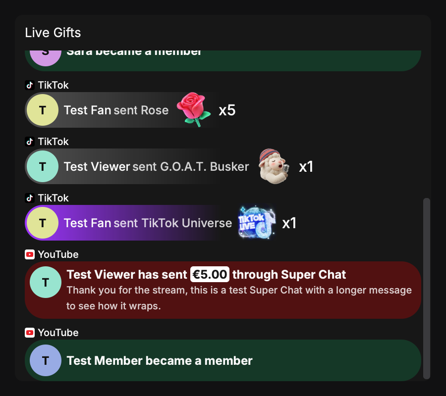
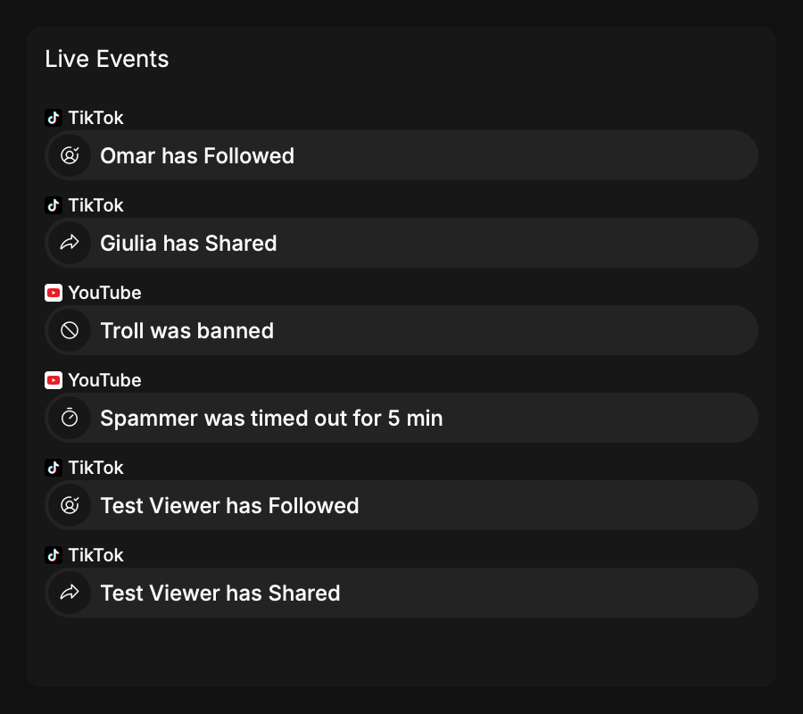

Early access · Windows installer for OBS Studio

Your whole live, in one timeline.
Chat, gifts, follows, Super Chats and live counters from TikTok LIVE and YouTube Live, side by side, as docks inside OBS Studio. Private by design: nothing leaves your computer.
TikTok LIVE and YouTube Live today · Twitch and Kick later


Screenshots use demo data (a test run of the app). Gift and sticker pictures are the real ones from TikTok.